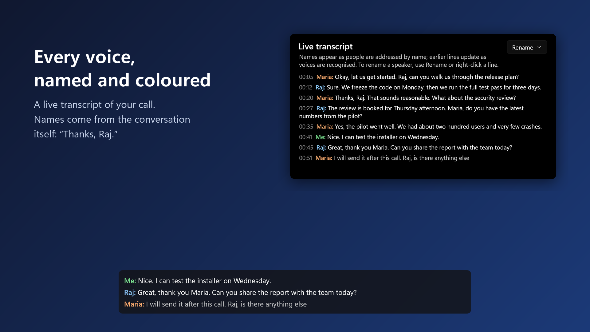
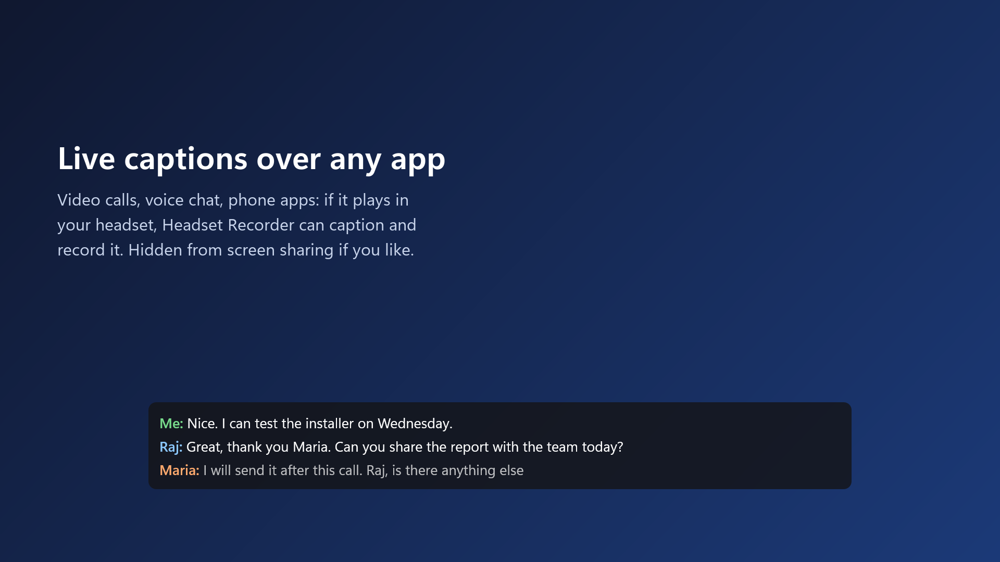
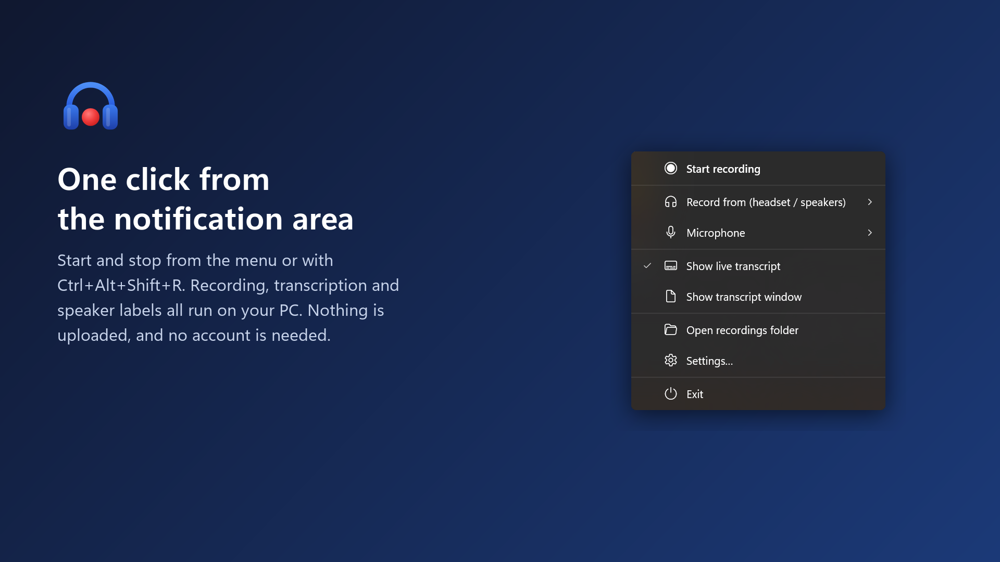

Record both sides of any call on your Windows PC — what you hear in your headset and what you say
into your mic — with a live transcript and speaker names. Nothing is uploaded.
US$9.99, one-time, with a 7-day free trial. Windows 10 version 2004 or later, x64 or ARM64.
What it does
Records what plays to your headset and your microphone — video calls, voice chat, phone apps, anything with sound.
A live transcript in a caption bar over any app, or a full window.
Each speaker gets their own colour, and is named when someone says their name in the call.
A second, more accurate pass after the call writes a tidy transcript with every speaker labelled.
Opus, AAC, MP3, FLAC or WAV recordings; transcripts as Markdown, HTML and JSON.
One click or Ctrl+Alt+Shift+R to start and stop.
Private by design
Speech recognition runs on your own PC — on your graphics card when it can, on the processor when it can't.
There is no account, no upload, and the app makes no network connections. See the
privacy policy.
Recording laws differ by place: in many, everyone on a call must agree to be recorded.
The app reminds you to tell people when you start. Speech recognition is English-only in this version.
Screenshots

The transcript window: speakers in their own colours, named from the conversation.

The caption bar, live over any app, and hidden from screen sharing if you like.

It lives in the notification area; one click starts and stops.